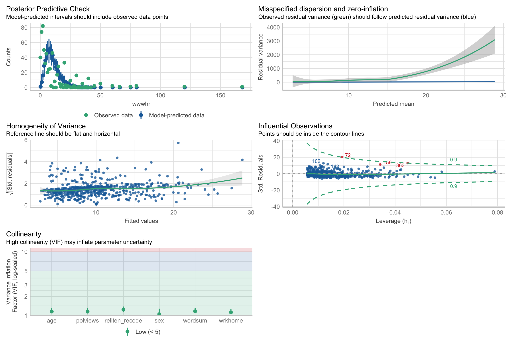
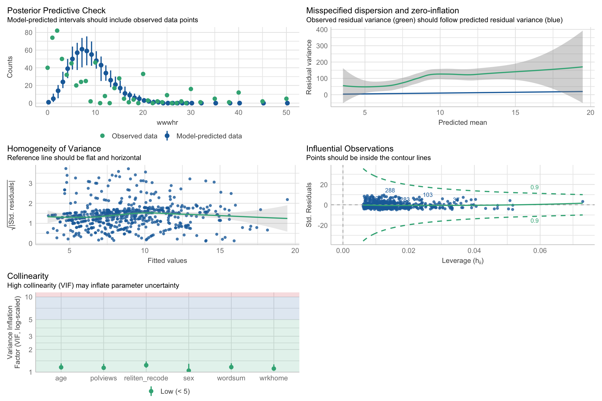

library(MASS)
library(tidyverse)
library(emmeans)
library(ggeffects)
library(easystats)
library(performance)
library(knitr)- To complete this lab:
- Load packages
- Download the dataset:
library(tidyverse)
data <- read_delim("https://raw.githubusercontent.com/jgeller112/psy504-advanced-stats/main/slides/Poisson/data/2010.csv")- Conduct the analysis described in the preregistration document
- The number of hours per week that a person spends on the Internet (“WWWHR”) will
be predicted by their vocabulary (“WORDSUM”), age (“AGE”), sex (“SEX”), religiosity
(“RELITEN”), political orientation (“POLVIEWS”), and how often they work from home
(“WRKHOME”).
- Let’s use the
naniarpackage’s functionreplace_with_nato clean the data.
library(naniar)
data_pos <- data %>%
dplyr::select(wwwhr, wordsum, age, sex, reliten, polviews, wrkhome) %>%
replace_with_na(.,
replace = list(wwwhr = c(-1, 998, 999),
wordsum = c(-1, 99),
reliten = c(0, 8, 9),
polviews = c(0, 8, 9),
wrkhome = c(0,8,9),
age=c(0, 98, 99)))Q: Can you explain what might be going on in the above code?
A: It seems like we are using dplyr to replace some codes (like 0, 8, 9, -1, 99, etc) with NAs.
Q: The next step in data cleaning would be to ensure that the data in your code are aligned with the description/ usage context of the variables
- Recode sex and reliten as necessary
data_pos <- data_pos %>%
mutate(sex = recode(sex, `-1` = "Male", `1` = "Female"))
data_pos$sex <- as.factor(data_pos$sex)
data_pos <- data_pos %>%
mutate(reliten_recode = factor(reliten, levels = c(1, 2, 3, 4, 5), ordered = TRUE))Missingness
data_pos %>%
dplyr::select(reliten, reliten_recode)# A tibble: 2,044 × 2
reliten reliten_recode
<dbl> <ord>
1 1 1
2 4 4
3 1 1
4 1 1
5 1 1
6 4 4
7 3 3
8 1 1
9 1 1
10 1 1
# ℹ 2,034 more rowslibrary(skimr)
skimr::skim(data_pos)| Name | data_pos |
| Number of rows | 2044 |
| Number of columns | 8 |
| _______________________ | |
| Column type frequency: | |
| factor | 2 |
| numeric | 6 |
| ________________________ | |
| Group variables | None |
Variable type: factor
| skim_variable | n_missing | complete_rate | ordered | n_unique | top_counts |
|---|---|---|---|---|---|
| sex | 0 | 1.00 | FALSE | 2 | Mal: 1153, Fem: 891 |
| reliten_recode | 99 | 0.95 | TRUE | 4 | 2: 747, 1: 707, 4: 363, 3: 128 |
Variable type: numeric
| skim_variable | n_missing | complete_rate | mean | sd | p0 | p25 | p50 | p75 | p100 | hist |
|---|---|---|---|---|---|---|---|---|---|---|
| wwwhr | 996 | 0.51 | 9.79 | 13.41 | 0 | 2 | 5 | 14 | 168 | ▇▁▁▁▁ |
| wordsum | 657 | 0.68 | 6.03 | 2.07 | 0 | 5 | 6 | 7 | 10 | ▁▃▇▅▂ |
| age | 3 | 1.00 | 47.97 | 17.68 | 18 | 33 | 47 | 61 | 89 | ▇▇▇▅▃ |
| reliten | 99 | 0.95 | 2.08 | 1.08 | 1 | 1 | 2 | 3 | 4 | ▇▇▁▂▃ |
| polviews | 71 | 0.97 | 4.08 | 1.46 | 1 | 3 | 4 | 5 | 7 | ▃▂▇▃▅ |
| wrkhome | 882 | 0.57 | 2.26 | 1.72 | 1 | 1 | 1 | 4 | 6 | ▇▁▁▂▁ |
Fit a Poisson model to the data.
- The number of hours per week that a person spends on the Internet (“WWWHR”) will
be predicted by their vocabulary (“WORDSUM”), age (“AGE”), sex (“SEX”), religiosity
(“RELITEN”), political orientation (“POLVIEWS”), and how often they work from home
(“WRKHOME”).
model <- glm(wwwhr ~ wordsum + age + sex + reliten_recode + polviews + wrkhome, data = data_pos,
family = poisson(link = "log"))
library(broom)
model %>%
tidy()# A tibble: 9 × 5
term estimate std.error statistic p.value
<chr> <dbl> <dbl> <dbl> <dbl>
1 (Intercept) 2.36 0.0737 32.0 9.60e-225
2 wordsum 0.102 0.00781 13.1 6.08e- 39
3 age -0.0166 0.00109 -15.3 1.04e- 52
4 sexMale -0.250 0.0266 -9.42 4.55e- 21
5 reliten_recode.L 0.457 0.0295 15.5 2.77e- 54
6 reliten_recode.Q -0.0465 0.0351 -1.32 1.86e- 1
7 reliten_recode.C 0.103 0.0413 2.50 1.24e- 2
8 polviews -0.0326 0.00977 -3.34 8.31e- 4
9 wrkhome 0.0787 0.00766 10.3 9.93e- 25Carry out model checking
Hint: performance package has the function you’re looking for
check_model(model,plot = T)
Find any outliers
#Q <- quantile(data_pos$wwwhr, probs=c(.25, .75), na.rm = T)
#iqr <- IQR(data_pos$wwwhr, na.rm = T)
#up <- Q[2]+1.5*iqr # Upper Range
#low<- Q[1]-1.5*iqr # Lower Range
#subset(data_pos, data_pos$wwwhr >= (Q[1] - 1.5*iqr) & data_pos$wwwhr <= (Q[2]+1.5*iqr))
# I tried this method above and it cut almost 1000 observations. Any thoughts to why this happened? I'm confused...
stats <- data_pos %>%
summarize(mean_wwwhr = mean(wwwhr, na.rm = TRUE),
sd_wwwhr = sd(wwwhr, na.rm = TRUE))
data_pos_filtered <- data_pos %>%
filter(wwwhr >= (stats$mean_wwwhr - 3 * stats$sd_wwwhr) &
wwwhr <= (stats$mean_wwwhr + 3 * stats$sd_wwwhr))
check_outliers(model)3 outliers detected: cases 72, 156, 363.
- Based on the following method and threshold: cook (0.9).
- For variable: (Whole model).Refit the model after excluding outliers
new_model <- glm(wwwhr ~ wordsum + age + sex + reliten_recode + polviews + wrkhome, data = data_pos_filtered,
family = poisson(link = "log"))model_parameters(new_model) %>%
print_html()| Parameter | Coefficient | SE | 95% CI | z | p |
|---|---|---|---|---|---|
| (Intercept) | 2.10 | 0.08 | (1.95, 2.26) | 26.91 | < .001 |
| wordsum | 0.09 | 8.31e-03 | (0.08, 0.11) | 11.40 | < .001 |
| age | -0.01 | 1.14e-03 | (-0.01, -9.04e-03) | -9.89 | < .001 |
| sex (Male) | -0.14 | 0.03 | (-0.19, -0.08) | -4.85 | < .001 |
| reliten recode (linear) | 0.35 | 0.03 | (0.29, 0.41) | 11.35 | < .001 |
| reliten recode (quadratic) | -0.13 | 0.04 | (-0.20, -0.06) | -3.53 | < .001 |
| reliten recode (cubic) | 0.03 | 0.04 | (-0.05, 0.12) | 0.80 | 0.425 |
| polviews | -0.02 | 0.01 | (-0.04, -8.11e-05) | -1.97 | 0.049 |
| wrkhome | 0.04 | 8.33e-03 | (0.02, 0.06) | 4.79 | < .001 |
Check for Overdispersion
Hint: performance package has the function you’re looking for
check_model(new_model,plot = T)
What do you notice? And what’s a good next step forward? Can there be another model class that can fit the data? If so, fit this model to the data.
I notice that we no longer have an outlier problem, but we do have an overdispersion problem. The next step would proably use a negative binomial regression model.
check_overdispersion(new_model)# Overdispersion test
dispersion ratio = 10.644
Pearson's Chi-Squared = 6237.607
p-value = < 0.001 binom_model <- glm.nb(wwwhr ~ wordsum + age + sex + reliten_recode + polviews + wrkhome, data = data_pos_filtered)
summary(binom_model)
Call:
glm.nb(formula = wwwhr ~ wordsum + age + sex + reliten_recode +
polviews + wrkhome, data = data_pos_filtered, init.theta = 1.040080703,
link = log)
Coefficients:
Estimate Std. Error z value Pr(>|z|)
(Intercept) 2.116929 0.238400 8.880 < 2e-16 ***
wordsum 0.100891 0.025398 3.972 7.11e-05 ***
age -0.012406 0.003439 -3.608 0.000309 ***
sexMale -0.105146 0.087533 -1.201 0.229667
reliten_recode.L 0.343975 0.095018 3.620 0.000294 ***
reliten_recode.Q -0.106312 0.113643 -0.935 0.349533
reliten_recode.C 0.037056 0.134226 0.276 0.782494
polviews -0.023980 0.032425 -0.740 0.459566
wrkhome 0.035173 0.026443 1.330 0.183483
---
Signif. codes: 0 '***' 0.001 '**' 0.01 '*' 0.05 '.' 0.1 ' ' 1
(Dispersion parameter for Negative Binomial(1.0401) family taken to be 1)
Null deviance: 720.55 on 594 degrees of freedom
Residual deviance: 661.65 on 586 degrees of freedom
(440 observations deleted due to missingness)
AIC: 3808.7
Number of Fisher Scoring iterations: 1
Theta: 1.0401
Std. Err.: 0.0664
2 x log-likelihood: -3788.6810 model_parameters(binom_model) %>%
print_html()| Parameter | Coefficient | SE | 95% CI | z | p |
|---|---|---|---|---|---|
| (Intercept) | 2.12 | 0.24 | (1.65, 2.59) | 8.88 | < .001 |
| wordsum | 0.10 | 0.03 | (0.05, 0.15) | 3.97 | < .001 |
| age | -0.01 | 3.44e-03 | (-0.02, -5.46e-03) | -3.61 | < .001 |
| sex (Male) | -0.11 | 0.09 | (-0.28, 0.07) | -1.20 | 0.230 |
| reliten recode (linear) | 0.34 | 0.10 | (0.16, 0.53) | 3.62 | < .001 |
| reliten recode (quadratic) | -0.11 | 0.11 | (-0.33, 0.11) | -0.94 | 0.350 |
| reliten recode (cubic) | 0.04 | 0.13 | (-0.24, 0.29) | 0.28 | 0.782 |
| polviews | -0.02 | 0.03 | (-0.09, 0.04) | -0.74 | 0.460 |
| wrkhome | 0.04 | 0.03 | (-0.02, 0.09) | 1.33 | 0.183 |
Which one is better- your earlier model, or later model?
The negative binomial model (so the later model) has a much lower AIC, so we can conclude the model fits the data better than the poisson
test_likelihoodratio(new_model, binom_model)# Likelihood-Ratio-Test (LRT) for Model Comparison (ML-estimator)
Name | Model | df | df_diff | Chi2 | p
------------------------------------------------------
new_model | glm | 9 | | |
binom_model | negbin | 10 | 1 | 3309.46 | < .001AIC(new_model, binom_model) df AIC
new_model 9 7116.145
binom_model 10 3808.681What is zero inflation? Is there zero-inflation in your chosen model?
When there are too many zeros in your data, that can bias your result. There is indeed zero inflation in my chosen model.
performance::check_zeroinflation(binom_model)# Check for zero-inflation
Observed zeros: 40
Predicted zeros: 63
Ratio: 1.57lambda_poisson <- predict(new_model, type = "response")
lambda_negbinom <- predict(binom_model, type = "response")
# Log transform the lambda values
log_lambda_poisson <- log(lambda_poisson)
log_lambda_negbinom <- log(lambda_negbinom)
# Output the log lambda values for a subset of the data
head(data.frame(log_lambda_poisson, log_lambda_negbinom)) log_lambda_poisson log_lambda_negbinom
1 2.075745 2.079081
2 2.858883 2.913070
4 2.192097 2.220856
8 2.263431 2.252398
9 2.064265 2.030755
12 2.549028 2.592963predicted_counts_poisson <- predict(new_model, type = "response")
predicted_counts_negbinom <- predict(binom_model, type = "response")
# Calculate the mean of predicted counts for each model
mean_count_poisson <- mean(predicted_counts_poisson, na.rm = TRUE)
mean_count_negbinom <- mean(predicted_counts_negbinom, na.rm = TRUE)
# Output the mean counts
mean_count_poisson[1] 8.821849mean_count_negbinom[1] 8.836638Report your conclusions
It seems like the negative binomial model outputs slightly higher mean counts and log lambdas than the poisson distribution. It seems like we should favor the negative binomial outputs over the poisson.
We initally fitted a poisson model to predict the number of hours per week that a person spends on the Internet (“WWWHR”) using their vocabulary (“WORDSUM”), age (“AGE”), sex (“SEX”), religiosity (“RELITEN”), political orientation (“POLVIEWS”), and how often they work from home (“WRKHOME”) as fixed effects. We then fit a negative binomial model instead because there were too many outliers, in this model, only the effects of wordsum, age, and religiosity (linear) were significant but not those of sex, polviews, or working from home.